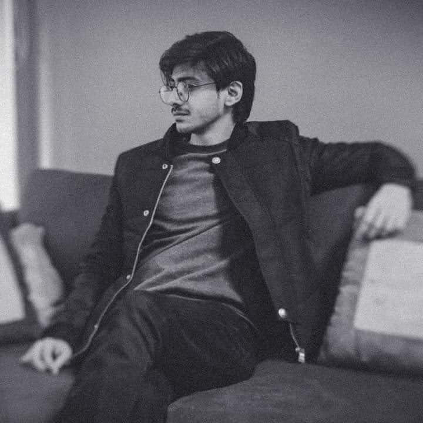

Usama Kamran Butt

SUMMARY
Creative and detail-oriented Graphic Designer with over 4 years of experience in branding, digital design, and visualising. Proficient in Adobe Creative Suite with a strong eye for composition, typography, and user experience. Currently expanding into web development with hands-on experience in HTML, CSS, and JavaScript. Passionate about combining aesthetics with functionality to build engaging, user-centered digital experiences.
EDUCATION
Bachelor of Computer Sciences (BSCS)
Lahore Leads University, Lahore, PK.
Graduated: 2019
- Relevant Courses: Cloud Computing, Data Base Management System, AI, Computer Nwtworks.
- Dean's List: 2015 - 2021
WORK EXPERIENCE
Creative Manager
Rafi Group, Lahore, PK.
March 6, 2023 - Present
- Designed over 10 brand events and digital campaigns
- Collaborated with developers to prepare visual assets for websites and apps
- Improved client engagement by 30% through strategic visual content on social media platforms
- Managed a team of 5 designers, providing mentorship and guidance on design projects
Graphic Designer
Strategos Media Solutions, Lahore, PK.
Nov 1, 2019 - March 1, 2023
- Designed over 50 brand identities and digital campaigns for clients in tech, fashion, and hospitality
- Worked on UI mockups and prototyping using Figma and Adobe XD
- Made creative videos and animations for multinational brands like Xiaomi, Poco & GAC Motors
- Made over 10 Websites for clients using Shopify & Wordpress platform
SKILLS
Design Tools:
Adobe Photoshop, Illustrator, Figma, After Effects, Premier Pro
3d Tools:
Blender, Daz 3d, Marvellous Designer, FaceGen
Other:
Wordpress & Shopify
AWARDS & CERTIFICATIONS
Employee of the Year
2024 - 2025
Others: